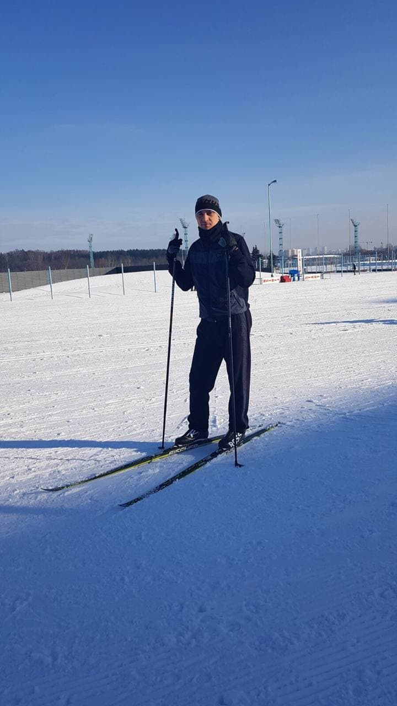

|  |
Книга
Дмитрий
Геннадьевич
|
Обо мне
Добрый день,
Привет, я Дмитрий.
Я начинающий Front-End разработчик. Мне интересна сфера программирования, потому что она даёт множество возможностей для развития, ты можешь совершенствоваться и обучаться независимо от своего местонахождения и, что самое главное, если очень стараться и много работать, то можно много добиться в разработке. Я бывший офицер, более 10 лет работал в вооруженных силах РБ инженером по ремонту авиационной техники. Уволился в 2020 году и сейчас я фрилансер. На данный момент я очень много учусь, постоянно повышаю свою квалификацию. Своими лучшими качествами я считаю целеустремленность, умение работать в условиях многозадачности, организаторские способности, коммуникабельность, ответственность и пунктуальность, также умею работать с большим объёмом информации, легко обучаюсь и постоянно совершенствуюсь и повышаю уровень владения английским языком.
Мне бы очень хотелось стать частью крутой команды и принимать участие в решении сложных задач и реализации интересных проектов. Безусловно, придя на абсолютно новое рабочее место, мне придется многому научиться, но я уверен, что моего опыта и навыков, а главное, стремления, упорства и настойчивости будет достаточно для хорошего старта.